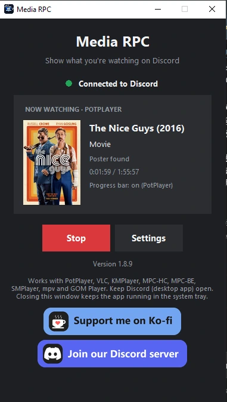
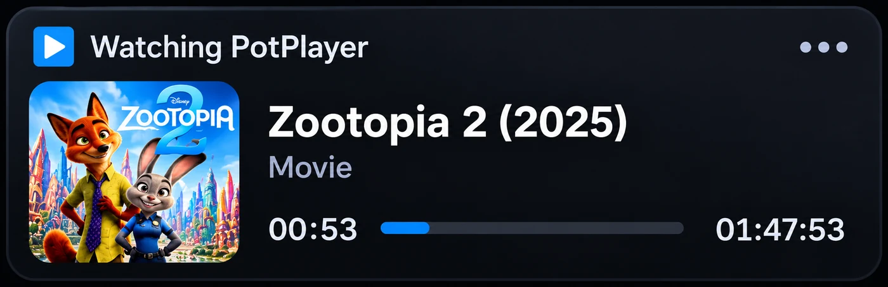
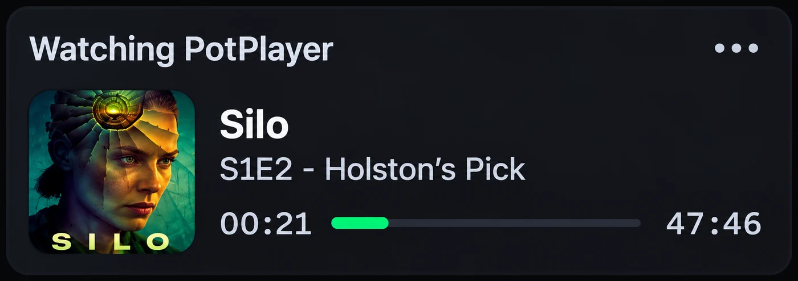
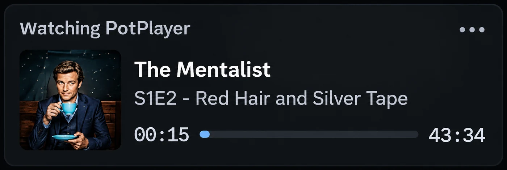
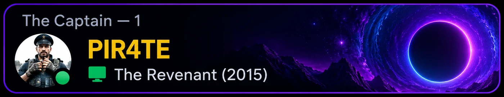

Automatic detection
Reads your player's window title and tells films from series episodes. Release noise like 1080p, x265 or site tags is cleaned up for you.
> Discord Rich Presence for Windows
Media RPC detects the film or episode playing in your video player or browser and shows it on your profile as a Watching card, with poster, episode name and a live progress bar.
Free. No account, no API keys.
—
Downloads
—
Latest version
8
Supported players
Free
Open source
Live numbers from GitHub Releases.
Preview





01 / Features
Reads your player's window title and tells films from series episodes. Release noise like 1080p, x265 or site tags is cleaned up for you.
Artwork and episode titles come from TVmaze, AniList (anime), iTunes, IMDb and Wikipedia. A poster is only used when the title and year really match.
The card can show the genre and the IMDb rating next to the title, like Comedy · ★ 7.4, when they can be found. You can turn it off in Settings.
PotPlayer, VLC, MPC-HC and MPC-BE show a bar that follows seeking, pausing and resuming. Other players get an elapsed timer.
Watching on a website? It's on by default: Media RPC reads the tab title of Chrome, Edge, Firefox, Brave, Opera and Vivaldi. Only a tab that is playing sound is looked at, and only a real film or series is shown. YouTube is a separate opt-in checkbox.
The card says "Paused" while the video is paused, or hides itself entirely if you prefer.
Hide the status while paused, show or hide genre and rating, or switch on privacy mode so Discord only shows "Watching" your player and the file name is never looked up online.
Get notified when a new version is out and update in one click. Downloads are checked against a SHA-256 checksum before installing.
02 / Players
Browsers work too: Chrome, Edge, Firefox, Brave, Opera and Vivaldi (on by default). A browser can't share the video position, so those cards show an elapsed timer instead of a progress bar.
Windows Media Player and the Windows 11 "Media Player" app don't put the film name in their window title, so they can't be detected.
03 / Get started
Grab MediaRPC.exe from the latest release. No installer, no Python.
Double-click it and keep the Discord desktop app open. It lives in your system tray.
Start a film or episode in your player. It now shows on your Discord profile.
04 / FAQ
The exe isn't code-signed, so Windows SmartScreen shows a warning. Click More info → Run anyway. The whole project is open source, and you can read the code or build the exe yourself on GitHub.
It needs the Discord desktop app on the same PC as your player. The browser version can't receive Rich Presence from apps.
That's a Discord rule: Rich Presence buttons are only shown to other people. Ask a friend to check it.
Only the cleaned-up title (and year) is used to look up posters, and one request to GitHub checks for updates. With website detection on, only the title of a browser tab that is playing sound is read, and only to check whether it is a film or series. Turn on privacy mode and the film name is never shown on Discord. The app also sends a small anonymous usage count (a random install id and the app version, every 30 minutes) so the author can see how many people use it. It contains no film names and no personal data, and you can switch it off in Settings.
Yes. It is the total download count GitHub reports for MediaRPC.exe across all releases, fetched live when you open this page.